🔖原文信息（编者中文重排）
📚 文献信息
▪ Post MD, Schenk RJ, Fargnoli R. Utilization of the cervical flexion rotation test to confirm rotation directional preference in people with neck pain: a case series. Cureus. 2023;15(10):e47389. doi:10.7759/cureus.47389
▪ 中文题目：用颈椎屈曲旋转试验确认颈痛患者的旋转方向偏好：病例系列
▪ 作者单位：美国费城好牧人宾大合作康复中心（物理治疗）；美国塔夫茨大学医学院（波士顿，物理治疗）
▪ 研究类型：病例系列（连续 3 例，无对照组）
腰痛里，方向偏好（directional preference）已经是很常用的分类思路：找到能让疼痛减轻、中心化或消失的那个运动方向，顺着它练。可到了颈痛，2017 年版颈痛临床实践指南里并没有提到方向偏好。
其实颈痛患者里方向偏好并不少见。原文引用的一项研究里，按麦肯基力学诊断与治疗（MDT）分类，紊乱综合征占 92%，出现中心化的占 74%～82%；有方向偏好的人里，偏好伸展的占 78.7%，偏好侧向运动的只有 13.7%。偏好旋转的呢？临床上大家都在用旋转练习，但文献里还没有专门的病例报告。
这篇病例系列想回答的就是这个空白：当矢状面、冠状面的重复运动都找不到方向时，能不能用颈椎屈曲旋转试验当“基线”，去确认患者其实偏好上颈椎旋转？
• 方向偏好：某个特定方向的运动能改善活动度，并让疼痛减轻、中心化或消失；它往往和加重疼痛、受限的那个方向相反
• 中心化：方向偏好的一种，脊柱牵涉的症状由远及近地回缩、消失
• 重复末端运动评估：MDT 的核心步骤，一般先做矢状面（后缩、伸展、屈曲），需要时再做冠状面（侧屈）和水平面（旋转），每做一组都复测症状和活动度这些“基线”，看有没有改善
• MDT 把患者分成紊乱、功能不良、姿势和其他四类综合征；方向偏好和中心化是紊乱综合征的特征
患者仰卧，检查者先把颈椎被动屈曲到末端，锁住中下颈椎，再把头向左、向右被动旋转到末端，比较两侧的活动度和症状。因为中下颈椎在屈曲位下旋转受限，这个试验主要反映上颈椎（尤其是寰枢关节）的旋转（编者补充）。它原本多用于颈源性头痛，这篇把它用在了没有头痛的颈痛患者身上。
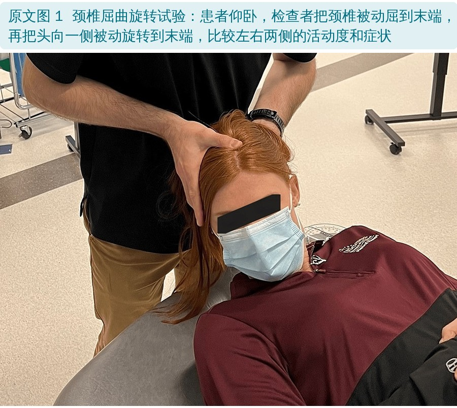
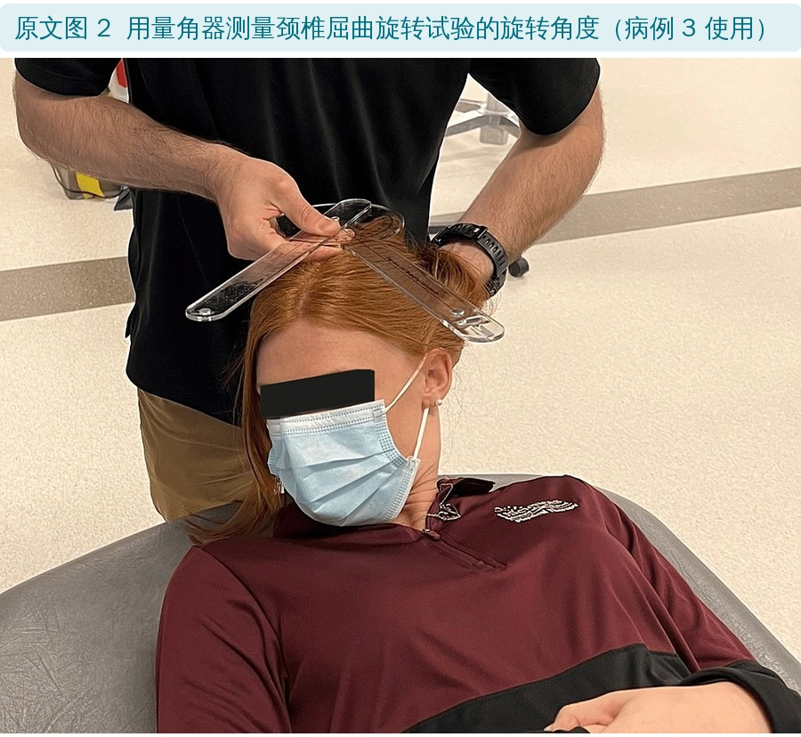
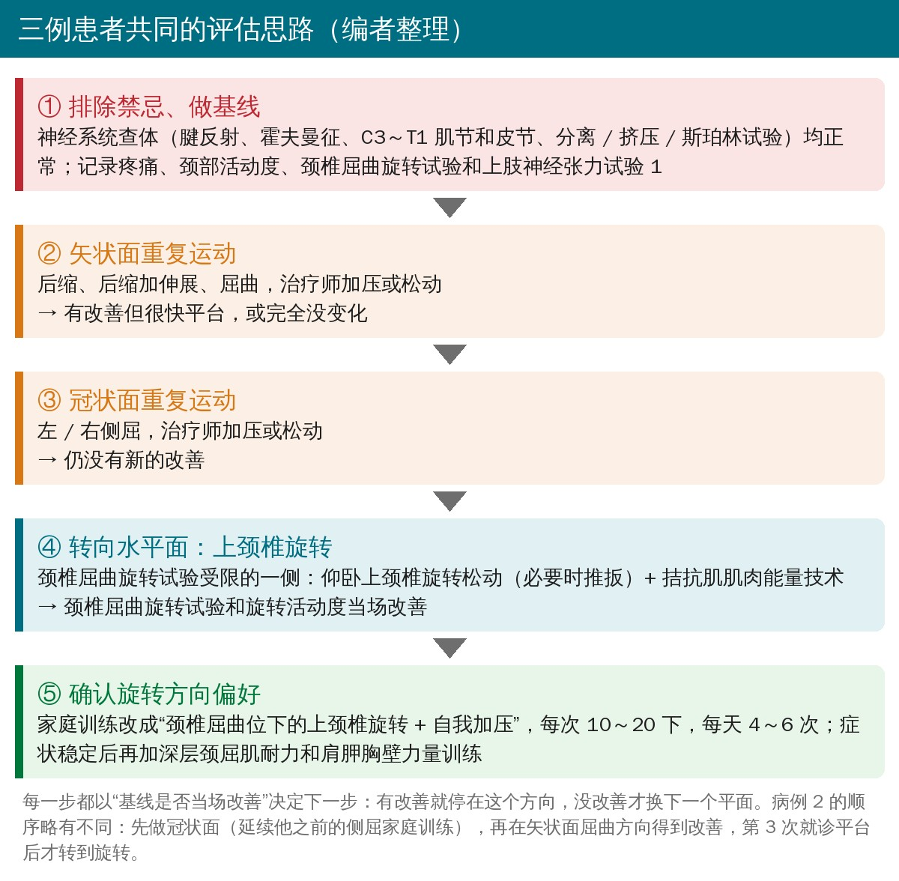
• 对象：连续 3 例颈痛患者，按 MDT 原则都归为颈椎紊乱综合征，颈椎屈曲旋转试验都阳性
• 治疗者：1 名物理治疗博士，持有 MDT 文凭（Diploma），也是美国骨科手法物理治疗师学会（AAOMPT）会员
• 检查：全身各系统回顾、既往史、影像；上肢腱反射、霍夫曼征、C3～T1 肌节和皮节、分离 / 挤压 / 斯珀林试验都正常；再做颈胸椎重复末端运动评估，看症状和机械反应
• 干预：上颈椎旋转松动（必要时推扳）和肌肉能量技术，之后接旋转方向的家庭训练
• 活动度记录：量角器、倾角计，或按 MDT 的“无 / 轻度 / 中度 / 重度受限”描述；病例 3 用量角器测颈椎屈曲旋转试验；上肢神经张力试验 1 记录为肘伸展角度
结局指标（编者按原文整理）
| 指标 | 说明 | 有意义的变化 |
|---|---|---|
| 数字疼痛评分 | 0～10 分 | ± 2 分 |
| 整体感知效果 / 整体变化评分 | 患者自评好转程度 | 整体变化评分 ± 5 分 |
| 颈部功能障碍指数 | 颈痛专用功能量表，百分比 | 19% |
| 简版上肢功能障碍问卷 | 上肢功能量表，百分比；病例 2 使用 | 15% |
原文还记录了患者自评功能百分比，以及深层颈屈肌耐力试验（坚持的秒数）。
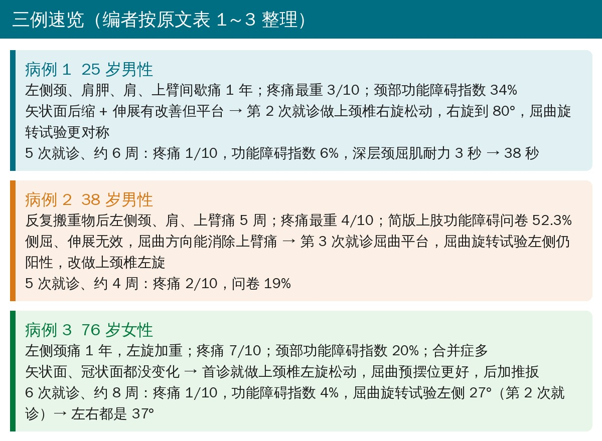
因“颈椎神经根病”转诊。左侧为主、双侧不对称的颈痛，伴左肩胛、肩和上臂痛，隐匿起病、间歇发作 1 年。疼痛最重 3/10，酸、钝、紧；颈部活动和久坐久站加重，躺下和热敷缓解。X 线无异常。
| 就诊 | 关键基线 | 做了什么、反应如何 |
|---|---|---|
| 第 1 次 （第 1 周） | 疼痛 3/10；颈部功能障碍指数 34%；左右旋各 70°；屈曲旋转试验右侧阳性；神经张力试验 1 左 152°、右 165°；深层颈屈肌耐力 3 秒 | 坐位后缩、后缩 + 伸展加治疗师加压 → 活动度和神经张力试验改善，很快平台。家庭训练：后缩 + 伸展自我加压，10～20 下，每天 4～6 次 |
| 第 2 次 （第 2 周） | 疼痛 3/10；自觉好转 15%；左旋 80°、右旋 70°；神经张力试验已对称 | 矢状面、冠状面都没有新改善 → 仰卧上颈椎右旋松动 2×3，右旋到 80°，屈曲旋转试验更对称。家庭训练改为屈曲位上颈椎右旋 + 自我加压（图 4） |
| 第 3 次 （第 3 周） | 疼痛 1/10；自觉好转 50%；左右旋各 85° | 上颈椎右旋松动 4×3 + 拮抗肌肌肉能量技术（7 秒，3×7）（图 5），家庭训练不变 |
| 第 4～5 次 （第 4～6 周） | 疼痛 1/10；自觉好转 95%；功能 95%；颈部功能障碍指数 6%；深层颈屈肌耐力 38 秒 | 继续手法；加肩胛胸壁训练：俯卧推肩、鸟狗式、抗阻肩前屈和对角线屈曲，各 3×20 |
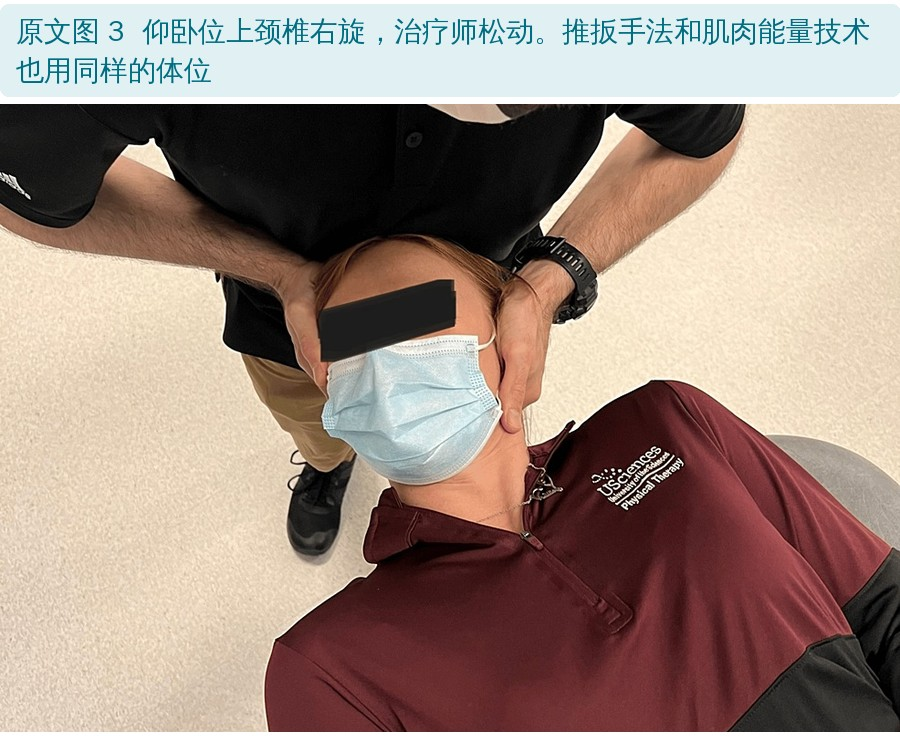
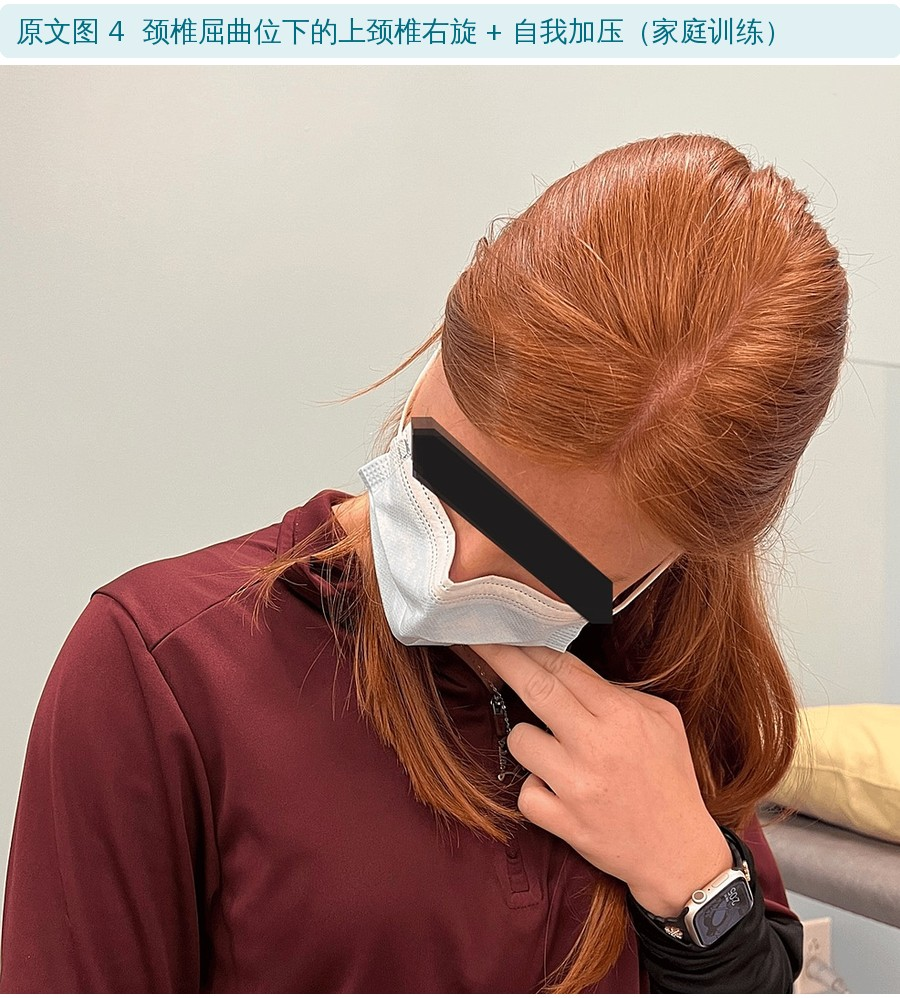
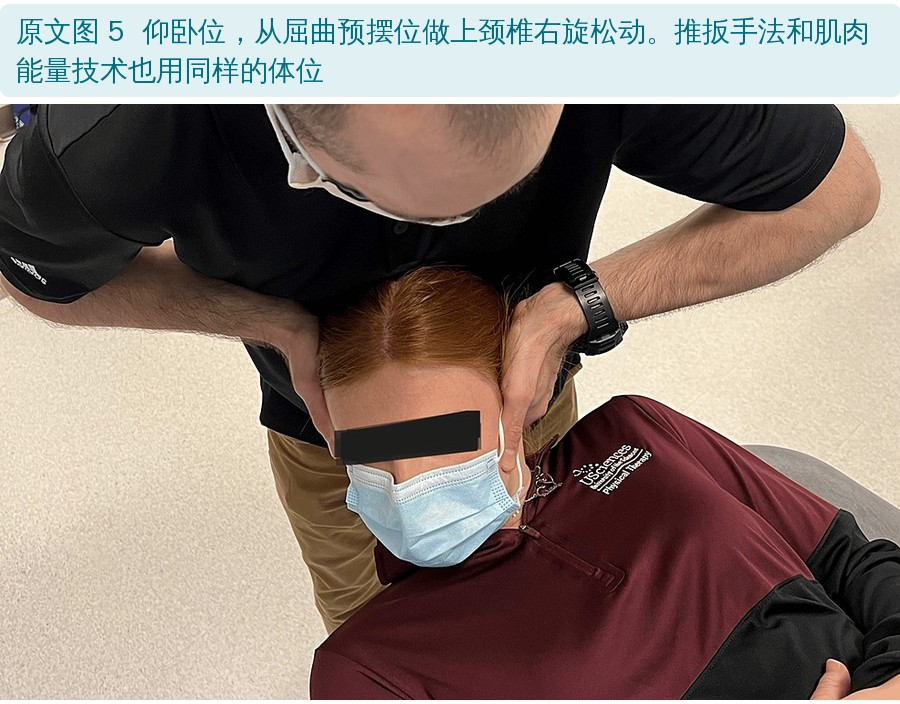
同样因“颈椎神经根病”转诊。反复搬重物后出现左侧颈、肩胛、肩和上臂痛 5 周，疼痛最重 4/10，开车加重。之前另一位治疗师教他做左侧屈自我加压，只能短暂缓解。没有做影像检查。
| 就诊 | 关键基线 | 做了什么、反应如何 |
|---|---|---|
| 第 1 次 （第 1 周） | 疼痛 4/10；简版上肢功能障碍问卷 52.3%；左旋 65°、右旋 75°；屈曲旋转试验左侧阳性；神经张力试验 1 左 144°、右 157°；深层颈屈肌耐力 8 秒 | 左侧屈自我加压、治疗师松动 → 上臂痛减轻但平台；坐位“塌腰—过度挺直”姿势矫正 → 上臂痛减轻、神经张力试验改善。家庭训练：左侧屈自我加压 + 坐姿矫正 |
| 第 2 次 （4 天后） | 疼痛升到 8/10，自觉变差 50%；但活动度和神经张力试验都有改善（左旋 80°、右旋 90°） | 侧屈无效；后缩 + 伸展、持续伸展都让上臂痛加重；屈曲自我加压、仰卧屈曲松动 → 上臂痛消失、活动度改善。家庭训练改为屈曲自我加压 |
| 第 3 次 （第 2 周） | 疼痛 5/10；自觉好转 50%；神经张力试验对称；左旋仍受限且痛，屈曲旋转试验左侧仍阳性 | 屈曲没有新改善 → 仰卧上颈椎左旋松动 5×5，屈曲旋转试验左侧活动度增加；再做拮抗肌肌肉能量技术。家庭训练改为从屈曲或对侧侧屈位做上颈椎左旋 + 自我加压 |
| 第 4～5 次 （第 3～4 周） | 疼痛 2/10；自觉好转 80%；功能 90%；问卷 19%；颈部活动度、神经张力试验均正常 | 继续手法；加弹力带肩前屈、改良俯卧撑、深层颈屈肌耐力训练，各 3×20 |
因颈痛转诊。左侧颈痛 1 年，隐匿起病，疼痛 7/10，左旋加重，没有缓解的姿势。合并睡眠呼吸暂停、冠心病、胃食管反流、哮喘、周围神经病、不宁腿、糖尿病前期和尿失禁，同时在做平衡训练。
| 就诊 | 关键基线 | 做了什么、反应如何 |
|---|---|---|
| 第 1 次 （第 1 周） | 疼痛 7/10；颈部功能障碍指数 20%；屈 60°、伸 40°、左屈 20°、右屈 15°、左旋 40°、右旋 55°；屈曲旋转试验左侧阳性；深层颈屈肌耐力 0 秒；神经张力试验和椎基底动脉供血不足筛查阴性 | 后缩、后缩 + 伸展、俯卧后前向松动、屈曲、左侧屈都没变化 → 仰卧上颈椎左旋松动 4×5（图 8），活动度增加。家庭训练：屈曲或对侧侧屈位上颈椎左旋 + 自我加压，每 1～2 小时 10～20 下 |
| 第 2 次 （10 天后） | 家庭训练只做到 50%；疼痛 7/10；左旋 48°、右旋 52°；屈曲旋转试验左 27°、右 33° | 在右侧屈预摆位做左旋松动 → 疼痛加重、旋转变差；改成屈曲预摆位（图 9）→ 回到基线；平台后在屈曲预摆位做上颈椎推扳 ×2 → 疼痛减轻、活动度增加；再做肌肉能量技术 |
| 第 3～4 次 （第 3～6 周） | 家庭训练做到 75%～90%；疼痛 3/10；颈部功能障碍指数 10%；左旋 45°、右旋 64°；屈曲旋转试验左右都是 37° | 手法同前；加仰卧深层颈屈肌耐力训练（压力生物反馈 25 mmHg，10 秒 ×10），居家对着枕头做，每天 1 次 |
| 第 5～6 次 （第 7～8 周） | 疼痛 1/10；整体变化评分 +7/7；颈部功能障碍指数 4%；左旋 50°、右旋 70° | 继续手法；加弹力带直立划船、推肩各 30 下 |
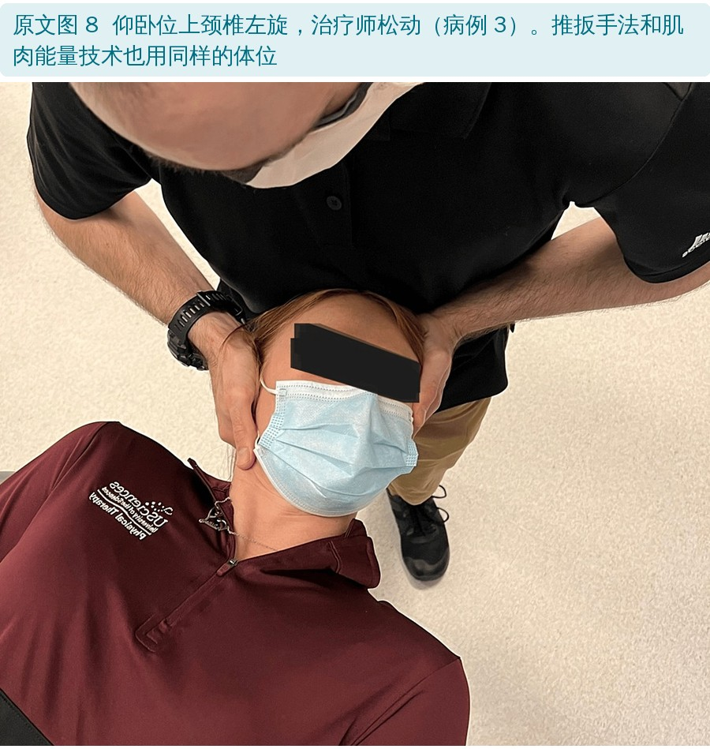
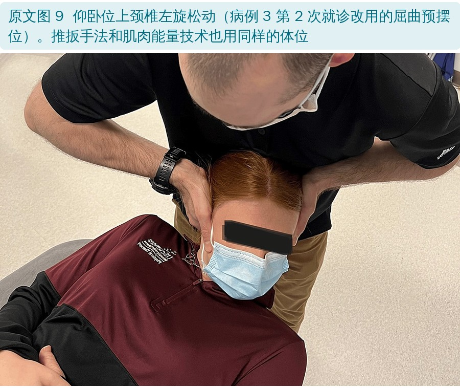
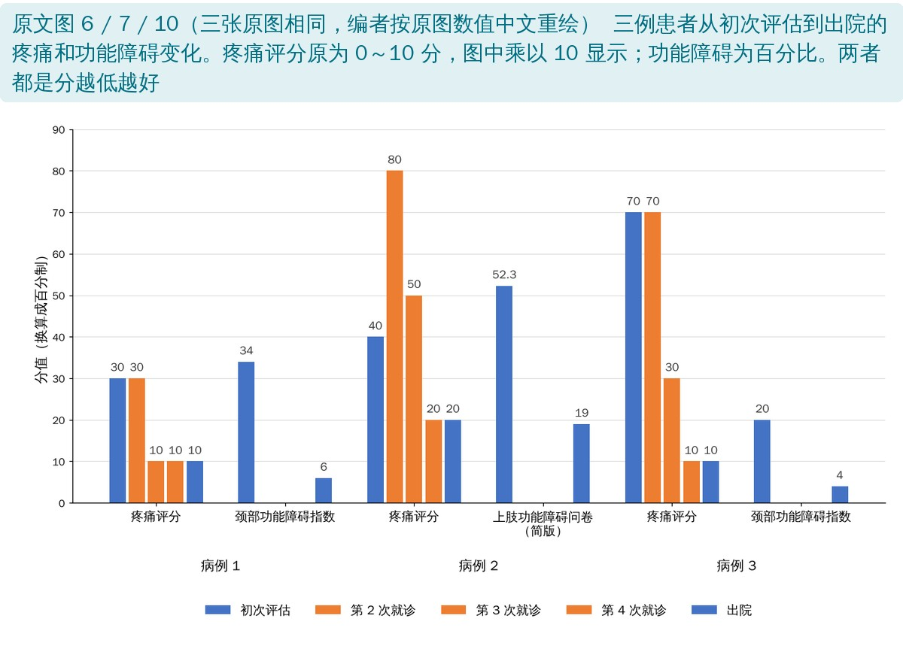
• 疼痛：病例 1 从 3/10 到 1/10，病例 2 从 4/10 到 2/10，病例 3 从 7/10 到 1/10，下降 50%～86%
• 功能障碍：颈部功能障碍指数 34% → 6%、20% → 4%；简版上肢功能障碍问卷 52.3% → 19%，下降约 64%～82%
• 三例出院时所有结局指标都达到最小临床重要差异，能独立完成家庭训练；就诊 5～6 次
• 值得留意：病例 3 出院时左旋仍比右旋少 20°（50° 对 70°），但屈曲旋转试验已经左右对称
三例在矢状面、冠状面重复运动之后，症状和机械基线（包括屈曲旋转试验）都没有继续改善；做了上颈椎推扳或非推扳松动、再接旋转方向的训练，才得到好的结局。作者认为，屈曲旋转试验的快速改变确认了旋转方向偏好。
作者也承认，屈曲旋转试验原本是用来诊断颈源性头痛和颞下颌关节痛的，而且会受中下颈椎功能障碍影响，这可能影响它的敏感性、特异性和结构效度。所以他们没有拿它做“诊断”，而是当作指导旋转干预的“基线”来复测。
"In these cases, the authors found that the CFRT was useful as a clinical baseline prior to and following a repeated movement testing process to determine if a patient demonstrated DP."
"在这几个病例中，作者发现，在重复运动测试前后，颈椎屈曲旋转试验可以作为判断患者是否存在方向偏好的临床基线。"
作者建议，下一步做更大样本的前瞻性研究，看这一亚组有多常见，并比较按传统 MDT、骨科手法物理治疗或 SNAG（持续自然关节突滑动）原则做旋转干预的效果。
• 证据级别低：只有 3 例、没有对照组，作者自己也说自然病程可能影响了结果；病例 2 病程 5 周，本来就有自行好转的可能
• 干预是“组合拳”：手法松动、推扳、肌肉能量技术、家庭旋转训练、后期力量训练一起上，分不清是哪一项起作用（编者观点）
• “旋转方向偏好”的判断有循环：先做了矢状面和冠状面，改善可能有累积效应；病例 2 先在屈曲方向明显好转，再转到旋转，很难说后面的改善只归功于旋转（编者观点）
• 评估者和治疗者是同一人，也没有盲法；颈椎屈曲旋转试验多数是目测，只有病例 3 用了量角器
• 病例选择有限：都是“矢状面、冠状面没找到方向 + 屈曲旋转试验阳性”的患者，作者也说这种按反应筛选的方式限制了适用人群
• 优点：每次就诊的干预、组数和当场反应都写得很细，把“看基线变化决定下一步”的临床推理过程完整呈现出来，适合教学
• 图 6、7、10 是同一张图：三张图分别配在三个病例后面，但内容完全一样（像素都相同），都是三例合并的柱状图
• 病例 2 引用了不存在的“图 2C、2D”：正文说家庭训练见图 2C、2D，但图 2 只有一张量角器测量照片，没有 C、D 子图
• 疗程写法：摘要说三例都在 5～8 周内完成 5～6 次就诊，但表 2 显示病例 2 的最后一次在第 3～4 周
• 基线功能障碍：摘要写 20%～52.6%，表 2 和结局图里病例 2 的简版上肢功能障碍问卷是 52.3%
• 伦理声明自相矛盾：同一句里说本报告“免于伦理委员会审查”，又说“经宾夕法尼亚大学伦理委员会批准”
• 图 8 和图 9 图注一样：正文说图 9 是病例 3 第 2 次就诊改用的屈曲预摆位，但两张图的图注都只写“仰卧上颈椎左旋松动”
• 结局图的纵轴：原图标“n/100”，疼痛评分实际是 0～10 分乘以 10 画上去的，原文没有说明
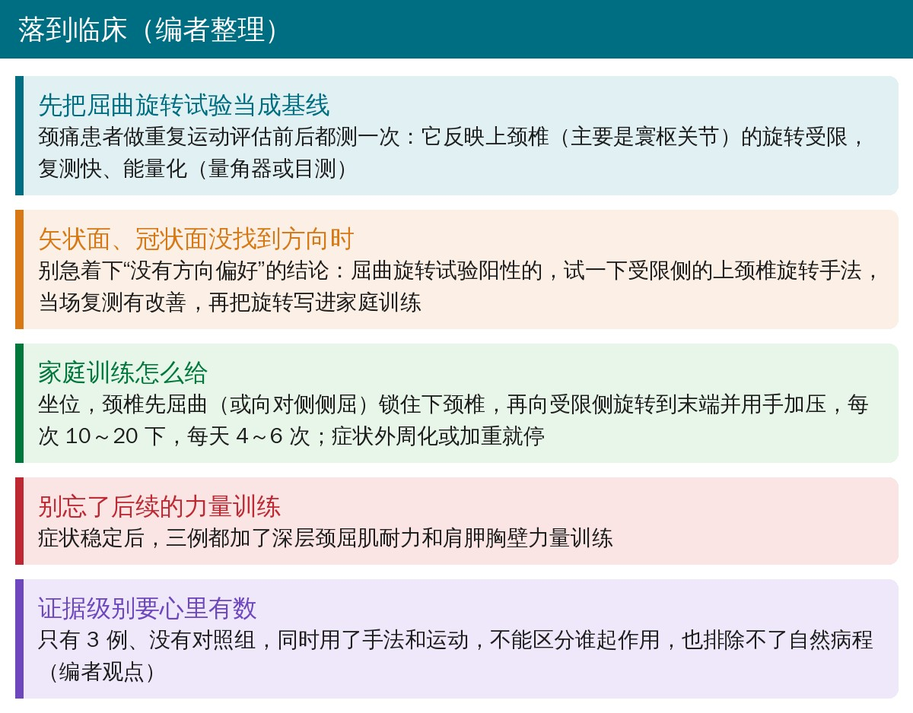
• 颈痛评估时把屈曲旋转试验加进基线：重复运动前后都测，左右对比，最好用量角器记角度
• 矢状面、冠状面找不到方向，不等于没有方向偏好：屈曲旋转试验阳性的，可以试受限侧的上颈椎旋转
• 预摆位很关键：病例 3 在对侧侧屈位做旋转反而加重，换成屈曲位才见效
• 家庭训练写具体：屈曲位下向受限侧旋转 + 自我加压，10～20 下，每天 4～6 次；外周化或加重就停
• 症状稳定后补力量：深层颈屈肌耐力和肩胛胸壁训练不能少
欢迎关注骨科康复小黄公众号，获取更多物理治疗的专业知识！
📄参考文献：
Post MD, Schenk RJ, Fargnoli R. Utilization of the cervical flexion rotation test to confirm rotation directional preference in people with neck pain: a case series. Cureus. 2023;15(10):e47389. doi:10.7759/cureus.47389
原文 © 2023 Post et al.，以知识共享署名 4.0 国际许可（CC BY 4.0）开放获取，允许在注明原作者和出处的前提下转载、改编。本文为中文解读，相对原文的改动：原文图 6、7、10（三张相同）按原图数值用中文重绘为一张；原文图 1～5、8、9 为照片，原样引用（仅等比缩放），中文图注为编者翻译；表格为编者根据原文表 1～3 翻译整理；首图、流程卡、三例速览卡、临床要点卡和封面为编者根据原文绘制。